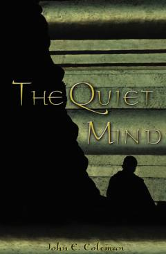

TQMuallifning Sharq falsafasi va meditatsiya amaliyotlarini o'rganish bo'yicha shaxsiy sayohati.
Ushbu kitob muallifning Sharq falsafasi va buddizm ta'limotini o'rganish yo'lidagi shaxsiy izlanishlari haqida hikoya qiladi. Muallif Tailand, Nepal va Yaponiyadagi turli monastirlarga sayohat qilib, meditatsiya amaliyotlari va ruhiy xotirjamlikka erishish sirlarini ochib beradi.